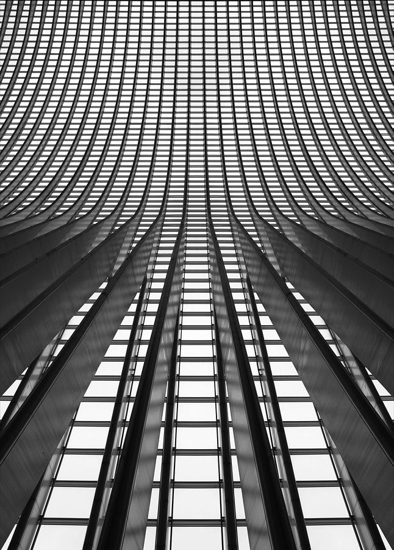
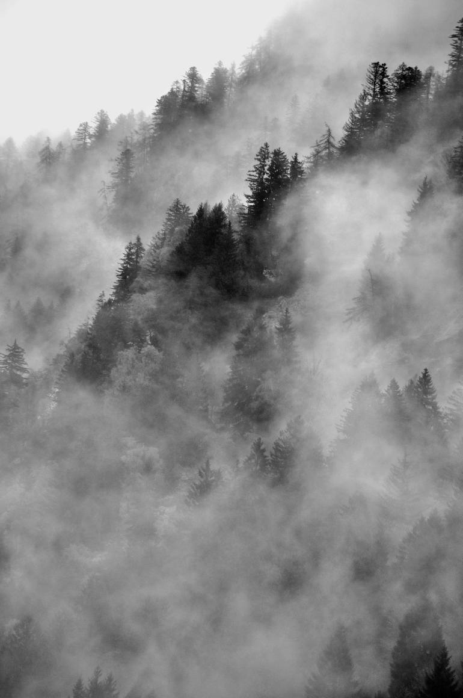

WHAT I DO
Architectural photography
Architectural photography is the photographing of buildings and similar structures that are both aesthetically pleasing and accurate representations of their subjects
Fashion Photography
Fashion photography is a genre of photography which is devoted to displaying clothing and other fashion items. Fashion photography is most often conducted for advertisements or fashion magazines
Documentary Photography
Documentary photography usually refers to a popular form of photography used to chronicle events or environments both significant and relevant to history and historical events as well as everyday life